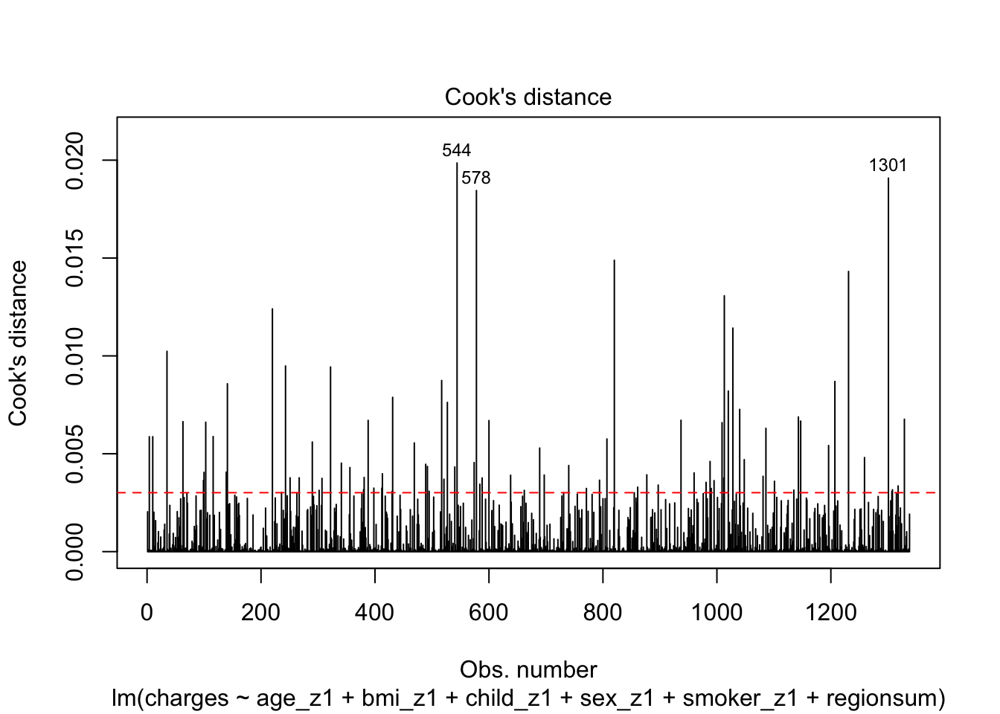
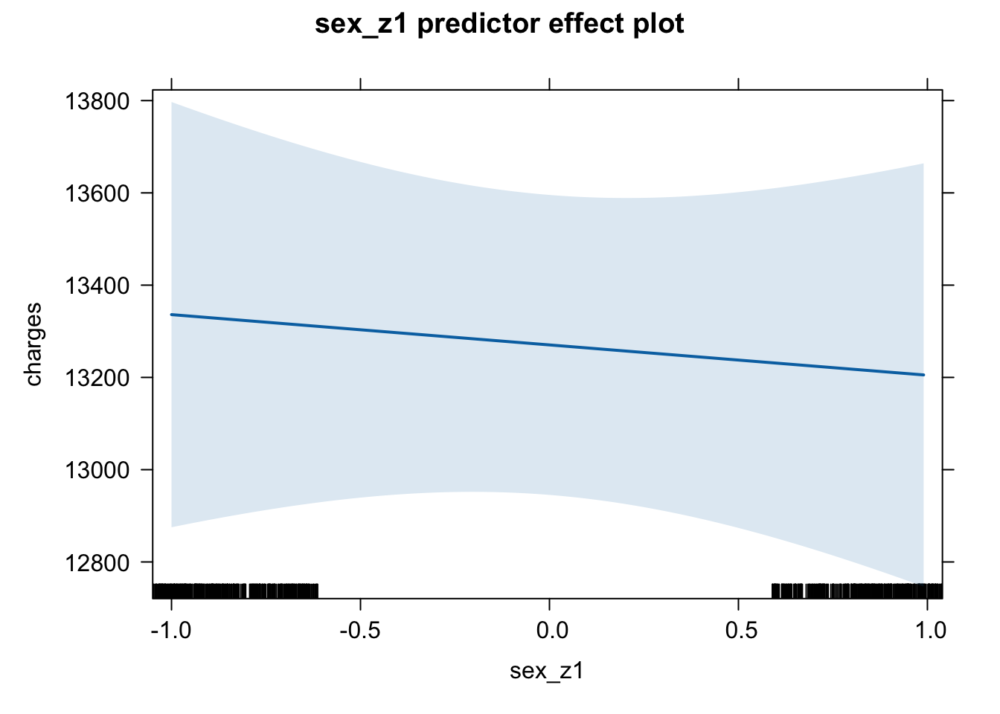

library(tidyverse)
library(effects)
library(broom)
library(gridExtra)
library(PerformanceAnalytics)2. Multiple Regression Including Categorical Predictors
Emma Mills
Lecture
Materials
There are two folders to download for week 12: I separated the materials into files tha R will upload, or should upload with no error; and .docx or .pdf files that R would not like. Please store the second folder somewhere for your use.
- The first folder is a zipped folder called Week 12 234 Materials.zip. It can be downloaded here. You can upload the zip file directly on to the R server and it will populate a new folder with the files and data files automatically.
- The second folder is called “Week_12_234_Slides_Codebook”. The slides are for the lecture; the Codebook is paired with the “student-por.csv” dataset, for the pre-lab and lab activity is available in a folder for download here.
Pre-Lab Activity
- Watch the lecture before you attempt anything!
- Download the zip files and upload to your R account
- In the
Week 12 Lab Materialsfolder is anOutputsfolder - go and find theModel Summary Output.pngfile and have a look at the regression model output - Begin by interpreting the model summary, as far as you can (as we did in Lab 11).
- Next get the analysis work flow diagram and begin to think about what piece of code do you need for each stage
- Start a script and import the dataset. Use the lecture and the model script
Multiple_Regression_Categorical_Predictors_2025.Rmdin theWeek 12 lecture materialsfolder to think about what processes may you need to perform to get to a model that looks like the output. - Write a plan of how you might approach an analysis to get to this model
- you could write bullet points against the stages of the analysis workflow diagram
- You might want to stop at this point - wanting some confirmation from your peers or staff; you could:
post to the discussion forum at this point and we could discuss it
talk amongst your peers and work together on it in independent study time - forming a small study group for this process
wait until the lab and bring ideas then…
The first two suggestions will help you grow in confidence faster. I promise, talking to each other - those horizontal conversations - will both let you share understanding, and also identify where some of my messaging is unclear and needs clarification or that the group of you just don’t get it and staff input would be helpful. And at this point, the benefit is that you don’t feel so alone in your uncertainty because you can see that other people are a bit stuck too.
My predictor labels and suffixes
The model output has several predictors with suffixes, demarcated by and underscore ’_’ and a letter e.g. ’_h’; I explain these in the R Studio demonstrations in the lecture and you can use these as a guide to which kind of processes you may choose to use to transform any variables.
Test Yourself
The link to this week’s multiple choice quiz, WBA 2, is here
Week 12: Multiple Regression with Categorical Predictors
In the demonstration sections, you can follow along using the Multiple_Regression_Categorical_Predictors_2025.Rmd file.
We will consider:
- dummy / treatment contrast coding
- changing the reference level
- sum coding - preparing for interactions
- centring and standardising
- Helmert contrast coding for ordinal variables
Make sure to load in the following libraries to follow along
Keep the model for multiple regression in mind:
You have seen the two predictor regression model equation before; today we have six
\[ Y_i = b_0 + b_1 * X_1 + b_2*X_2 + b_3*X_3 + b_4*X_4 + b_5*X_5 + b_6*X_6 + e_i \] - The predictors can be a mix of categorical and continuous predictors; there is no different notation between continuous and categorical predictors.
Import the Data
The data set is retrieved from https://www.kaggle.com/mirichoi0218/insurance
d <- read_csv("data/Wk2/Week_12_234_Materials/_Week_12_lecture_materials/insurance.csv")Looking at the information on reading the data in, we have three variables that R has detected as character variables: sex, smoker and region. Brilliant - three categorical variables.
Just as in any methods section, lets describe our measures:
sex: a categorical measure of biological sex with two levels: female; malesmoker: a categorical measure of smoker status with two levels: no; yesregion: a categorical measure of regions for where observations are located with four levels: NE; NW; SE; SW.age: a continuous variable of age in yearsbmi: a continuous variable of body mass index in BMI unitschildren: a variable (continuous? ordinal?) that describes the number of children within a family, with six levels: 0 - 5charges: the outcome variable; a continous variable that describes expected insurance charges in dollars.
If we call a summary on the dataset we will see the variables slightly differently.
summary(d) age sex bmi children
Min. :18.00 Length:1338 Min. :15.96 Min. :0.000
1st Qu.:27.00 Class :character 1st Qu.:26.30 1st Qu.:0.000
Median :39.00 Mode :character Median :30.40 Median :1.000
Mean :39.21 Mean :30.66 Mean :1.095
3rd Qu.:51.00 3rd Qu.:34.69 3rd Qu.:2.000
Max. :64.00 Max. :53.13 Max. :5.000
smoker region charges
Length:1338 Length:1338 Min. : 1122
Class :character Class :character 1st Qu.: 4740
Mode :character Mode :character Median : 9382
Mean :13270
3rd Qu.:16640
Max. :63770 Here is the first indication that we need a transformation; if we do not explicitly transform the character variables to factor variables, R will do it silently inside the modelling. But we want to be able to see a better level of information about our dataset, so we need to transform them now:
But first, lets tidy up the region level labels by relabelling them. Each level has long label names which will not look good on plots.
Tidy
Purely for cosmetic reasons, I am going to change the region variable to acronyms of the geographic regions. This is for labelling of plots:
# use nested ifelse() statements
d$region <- ifelse(d$region == "northeast", "NE",
ifelse(d$region == "northwest", "NW",
ifelse(d$region == "southeast", "SE", "SW")))
# change three character variables into factors
d <- d %>%
mutate(sex = factor(sex),
smoker = factor(smoker),
region = factor(region))
summary(d) age sex bmi children smoker
Min. :18.00 female:662 Min. :15.96 Min. :0.000 no :1064
1st Qu.:27.00 male :676 1st Qu.:26.30 1st Qu.:0.000 yes: 274
Median :39.00 Median :30.40 Median :1.000
Mean :39.21 Mean :30.66 Mean :1.095
3rd Qu.:51.00 3rd Qu.:34.69 3rd Qu.:2.000
Max. :64.00 Max. :53.13 Max. :5.000
region charges
NE:324 Min. : 1122
NW:325 1st Qu.: 4740
SE:364 Median : 9382
SW:325 Mean :13270
3rd Qu.:16640
Max. :63770 Now we can see the number of observations that we have for each level in each categorical variable. We can also see which of the levels in each categorical variable is the reference level. It is the level that is listed first when you call the summary function, so here it is females, non-smokers and the NE region of USA.
Visualise
Lets visualise the structure of the variables of the data set:
# bar charts for categorical variables
p_sex <- ggplot(d, aes(x = factor(sex), fill = factor(sex))) + geom_bar()
p_smok <- ggplot(d, aes(x = factor(smoker), fill = factor(smoker))) + geom_bar()
p_reg <- ggplot(d, aes(x = factor(region), fill = factor(region))) + geom_bar()
# (so called) continuous variables
p_age <- ggplot(d, aes(x = age)) + geom_density(fill = "slateblue")
p_age_hist <- ggplot(d, aes(x = age)) + geom_histogram() # possibly a little more detail using a histogram?
p_bmi <- ggplot(d, aes(bmi)) + geom_density(fill = "red")
p_child <- ggplot(d, aes(children)) + geom_histogram()
grid.arrange(p_sex, p_smok, p_reg, p_age_hist, p_bmi, p_child)We can also look at the relationships between each of the continuous variables: age, bmi and children
chart.Correlation(d[, c(1, 3, 4)], histogram=TRUE, pch=19)Understand:
Model
Our main focus for this week is working with the categorical variables. In regression, group differences are called contrasts and there are several ways to construct contrasts. On import, R will code categorical variables using its default dummy contrast coding scheme.
Take a look and see how R sees the categorical variables; the levels associated with 0 are the reference levels at the moment:
contrasts(d$sex) male
female 0
male 1contrasts(d$smoker) yes
no 0
yes 1contrasts(d$region) NW SE SW
NE 0 0 0
NW 1 0 0
SE 0 1 0
SW 0 0 1During the estimation of the regression model, the reference levels are estimated within the intercept term. This means that you won’t see the labels of the reference levels in any model summary; they are contained within the intercept. To begin with, we will create a model using the raw data, building a model with all six predictor variables. This is the model that you worked with in labs in week 11.
Here is the written regression model:
\[ Charges = b_0 + b_1 * X_{age} + b_2*X_{bmi} + b_3*X_{children} + b_4*X_{sex}+ b_5*X_{smoker} + b_6*X_{region} + e \]
And here is the statistical model for the regression of insurance charges on the 6 predictors, for the raw data:
summary(m6 <- lm(charges ~ age + bmi + children + sex + smoker + region, d))
Call:
lm(formula = charges ~ age + bmi + children + sex + smoker +
region, data = d)
Residuals:
Min 1Q Median 3Q Max
-11304.9 -2848.1 -982.1 1393.9 29992.8
Coefficients:
Estimate Std. Error t value Pr(>|t|)
(Intercept) -11938.5 987.8 -12.086 < 2e-16 ***
age 256.9 11.9 21.587 < 2e-16 ***
bmi 339.2 28.6 11.860 < 2e-16 ***
children 475.5 137.8 3.451 0.000577 ***
sexmale -131.3 332.9 -0.394 0.693348
smokeryes 23848.5 413.1 57.723 < 2e-16 ***
regionNW -353.0 476.3 -0.741 0.458769
regionSE -1035.0 478.7 -2.162 0.030782 *
regionSW -960.0 477.9 -2.009 0.044765 *
---
Signif. codes: 0 '***' 0.001 '**' 0.01 '*' 0.05 '.' 0.1 ' ' 1
Residual standard error: 6062 on 1329 degrees of freedom
Multiple R-squared: 0.7509, Adjusted R-squared: 0.7494
F-statistic: 500.8 on 8 and 1329 DF, p-value: < 2.2e-16Remembering that the intercept describes: a female, non-smoker of no age or weight, and no children, who lives in NE USA.
Lets have a quick look at the output and the coefficient labels column. All of the categorical variables are toward the bottom of the list because we entered them toward the end of the list in the model.
Notice how: - the label for sex is sexmale, which tells us that the reference level for the sex variable is female is in the intercept - makes sense since the default is for the first group in the alphabet to be taken as the reference level group. - smoker becomes smokeryes to reflect that being a non-smoker is the reference level group. - the NE region does not have a coefficient in the model summary; since it is the reference level for the region variable, it is contained within the intercept.
Transform: Types of Categorical Contrasts
Dummy or Treatment Coding Scheme
It may make more sense to change the reference level of a variable. Your hypothesis may suggest a particular reference level. You can control the reference level in the dummy coding command: Using the relevel()` function.
d$smoker <- relevel(d$smoker, ref = "yes")
d$sex <- relevel(d$sex, ref = "male")
d$region <- relevel(d$region, ref = "SE")
contrasts(d$sex) female
male 0
female 1contrasts(d$smoker) no
yes 0
no 1contrasts(d$region) NE NW SW
SE 0 0 0
NE 1 0 0
NW 0 1 0
SW 0 0 1Look at the top row for each variable where the zeroes are. Notice how for sex and smoker, the reference levels are now the last word in the alphabet. We have changed the reference levels.
Any model that we now call has a different interpretation on the intercept. The intercept now represents a male, smoker of no age, weight or children that lives in SE USA.
Lets recall the model: No changes to the code here:
summary(m6 <- lm(charges ~ age + bmi + children + sex + smoker + region, d))
Call:
lm(formula = charges ~ age + bmi + children + sex + smoker +
region, data = d)
Residuals:
Min 1Q Median 3Q Max
-11304.9 -2848.1 -982.1 1393.9 29992.8
Coefficients:
Estimate Std. Error t value Pr(>|t|)
(Intercept) 10743.66 1116.22 9.625 < 2e-16 ***
age 256.86 11.90 21.587 < 2e-16 ***
bmi 339.19 28.60 11.860 < 2e-16 ***
children 475.50 137.80 3.451 0.000577 ***
sexfemale 131.31 332.95 0.394 0.693348
smokerno -23848.53 413.15 -57.723 < 2e-16 ***
regionNE 1035.02 478.69 2.162 0.030782 *
regionNW 682.06 478.96 1.424 0.154669
regionSW 74.97 470.64 0.159 0.873460
---
Signif. codes: 0 '***' 0.001 '**' 0.01 '*' 0.05 '.' 0.1 ' ' 1
Residual standard error: 6062 on 1329 degrees of freedom
Multiple R-squared: 0.7509, Adjusted R-squared: 0.7494
F-statistic: 500.8 on 8 and 1329 DF, p-value: < 2.2e-16The formula is the same, the residuals are the same, the significance and variance explained is the same. The change is in how the model estimates the coefficients given the reference levels of the variables.
There is no change here for coefficients for our continuous variables. The coefficients for our categorical variables have changed however:
sexfemalenow describes the difference in charges when you move from being male to female. The magnitude of the coefficient remains the same however the direction of the effect is reversed. Before changing the reference level, the coefficient was negative, now it is positive. Changing from male to female is associated with an increase in insurance charges of approximately $131.00.smokernonow describes the difference in charges when you move from being smoker to a non-smoker. The magnitude of the coefficient remains the same however the direction of the effect is reversed. Before changing the reference level, the coefficient was positive, now it is negative. Changing from being a smoker to a non-smoker is associated with a decrease in insurance charges of approximately $23,848.00.- changing the
regionreference level from NE to SE now describes the difference in charges between residents of SE USA and the other regions. First look at the NE coefficient - that has stayed the same value but has changed direction. This is because NE used to be the reference level and this coefficient was always describing a difference in charges between NE and SE USA. Living in the NE is associated with higher insurance charges. The other two coefficients have changed in both direction and magnitude. We can infer from this that the SE region is associated with the lower insurance charges across the group of regions because all the coefficients are postive, indicating an increase in insurance charges relative to the SE. The coefficients have changed in magnitude because they now describe a different relationship - between SE and themselves rather than NE.
The big change here is in the intercept. By changing the reference levels, the intercept is now positive - people are amassing insurance charges, which makes more sense. I am guessing that it is the huge coefficient of the smoker variable that has effected this change.
We will keep the reference levels like this going forward.
A Quick Check of Model Diagnostics
Has our model explained all the structured variance? Lets look at diagnostic plots before we go any further:
par(mfrow = c(2, 2)) # display plots in a 2 x 2 panel
plot(m6)
So, we know little about these variables, and we haven’t even looked at the individual coefficients in the summary outputs. We know that the model for the six predictors is significant but we can see that the percentage of variance explained in the charges variable is 75%. Looking at the residuals plot above, there is still a lot of clustering in the residuals, however. And clustering should indicate to you that the residuals have some correlated relationship between them. Which means we are either missing some predictors that would explain this correlation or the linear model is not a good choice of model. Quite often, you would begin to consider interaction terms when you see this level of correlation in the residuals - we will consider interactions in week 13.
If you are going to put interactions into a regression model, and you want to mix categorical and continuous predictors in the interaction term, there is a more effective contrast scheme to use with your categorical variables: Sum or Deviation Contrasts.
Sum or Deviation Coding Schemes
So, lets think about interactions - introduced in the context of ANOVA last term and thinking about many of the presentations in the 204 module at the end of last term, they are germain to the structure of experimental design whenever groups are included.
What interactions could be plausible here? Just using what we know about medical problems and charges and the variables we have - could there be an interaction between bmi and smoker status? Or bmi and gender for females who are experiencing the menopause? Do lifestyle choices cluster together to effect medical insurance charges? Does the number of children covered by insurance vary systematically by region?
Plausible interactions from the perspective of a layman (me) and I am not going to model them here. But it may inform the choice of contrasting scheme. If we want to interpret interactions between variables later on - either a mix of continuous and categorical or both categorical predictors, it makes sense to use sum coding. And even though we have one categorical variable with four levels (region), we can still do this.
It’s a good idea to make copies of variables so that your original variables remain intact. I am making new variables with the suffix ‘sum’ so I know these are the sum coded ones
# copy categorical variables to the same dataset with a suffix to denote sum coding status
d <- d %>%
mutate(sexsum = sex,
smokersum = smoker,
regionsum = region) contrasts(d$sexsum) # dummy coded right now female
male 0
female 1Now do the transformation using the contr.sum() function:
(contrasts(d$sexsum) <- contr.sum(2)) # levels are now 1 and -1 and variable is now centred at 0 [,1]
1 1
2 -1# repeat for the other two variables
(contrasts(d$smokersum) <- contr.sum(2)) # levels are now 1 and -1 and variable is now centred at 0 [,1]
1 1
2 -1(contrasts(d$regionsum) <- contr.sum(4)) # levels are now 1 and -1 but variable is not centred (because this isn't a binary variable) [,1] [,2] [,3]
1 1 0 0
2 0 1 0
3 0 0 1
4 -1 -1 -1contrasts(d$regionsum) [,1] [,2] [,3]
SE 1 0 0
NE 0 1 0
NW 0 0 1
SW -1 -1 -1Critically, it is the levels of the variable that are at ‘1’ that will be reported in the model summary. So here: males, smokers and SE, NE and NW of region. Lets refit the regression model using this contrast scheme:
I am calling my model m6_sum to remind me that the model still has six predictors but the categorical variables are now sum coded.
summary(m6_sum <- lm(charges ~ age + bmi + children + sexsum + smokersum + regionsum, d))
Call:
lm(formula = charges ~ age + bmi + children + sexsum + smokersum +
regionsum, data = d)
Residuals:
Min 1Q Median 3Q Max
-11304.9 -2848.1 -982.1 1393.9 29992.8
Coefficients:
Estimate Std. Error t value Pr(>|t|)
(Intercept) -666.94 968.64 -0.689 0.491239
age 256.86 11.90 21.587 < 2e-16 ***
bmi 339.19 28.60 11.860 < 2e-16 ***
children 475.50 137.80 3.451 0.000577 ***
sexsum1 -65.66 166.47 -0.394 0.693348
smokersum1 11924.27 206.58 57.723 < 2e-16 ***
regionsum1 -448.01 291.24 -1.538 0.124219
regionsum2 587.01 293.11 2.003 0.045411 *
regionsum3 234.05 292.92 0.799 0.424427
---
Signif. codes: 0 '***' 0.001 '**' 0.01 '*' 0.05 '.' 0.1 ' ' 1
Residual standard error: 6062 on 1329 degrees of freedom
Multiple R-squared: 0.7509, Adjusted R-squared: 0.7494
F-statistic: 500.8 on 8 and 1329 DF, p-value: < 2.2e-16The intercept has changed once more. It is now negative once more. We still see no material changes in the significance of the model or the effects, however. Telling us that while we are changing the way we are modelling our variables, we are not changing the relationships within the data.
- see how the binary categorical variables of
sexandsmokercoefficients are half what they were when dummy coded. You can see that the estimates are halved from them6model that uses dummy / treatment contrast coding.
# raw coefficient for sex divided by 2
# see the raw data model that we ran first
-131.3 / 2[1] -65.65# raw coefficient for smoker divided by 2
23848.5 / 2[1] 11924.25In order to find the insurance charges for the -1 levels, we have to use the equation. Lets do some math to demonstrate this:
Sex: The sex variable is our fourth predictor, so our maths equation looks like this:
\[ Y_i = b_0 + b_4 * X_{sex} \]
We need:
- the
interceptterm = \(b_0\) = (-666.94) - the coefficient value for
sexsum1(-65.66) from the model output; this is the fourth predictor, so if we had written out our equation for all the predictors, it would be \(b_4\) (as above) - we also need the labels for the two levels of the sex predictor: male (1) and female (-1) because we are going to put those in our \(X_4\) part of the equation.
Here we go:
# charges for being male
(InsuranceCharge_Male <- -666.94 + (-65.66 * 1))[1] -732.6# charges for being female
(InsuranceCharge_Female <- -666.94 + (-65.66 * -1))[1] -601.28# calculate the difference between being male or female
-732.6 - -601.28[1] -131.32The difference in insurance charges between females and males is still showing to be around $130.00 - which is the same value as in the dummy coded model
Lets do the math for the smoker variable:
The smoker variable is our fifth predictor, so our maths equation looks like this:
\[ Y_i = b_0 + b_5 * X_{smoker} \]
We need:
- the
interceptterm = \(b_0\) = (-666.94) - the coefficient value for
smokersum1(11924.27) from the model output; this is the fifth predictor, so if we had written out our equation for all the predictors, it would be \(b_5\) (as above) - we also need the labels for the two levels of the smoker variable: yes (1) and no (-1) because we are going to put those in our \(X_5\) part of the equation.
Here we go:
(InsuranceCharge_smoker <- -666.94 + (11924.27 * 1))[1] 11257.33(InsuranceCharge_nonsmoker <- -666.94 + (11924.27 * -1))[1] -12591.2111257.33- -12591.21 [1] 23848.54The difference in insurance charges between non-smokers and smokers is still showing the same value as in the dummy coded model
The region variable has four levels, NE, NW, SE and SW. It is sum-coded in our model at the moment. Because it has four levels it is a little harder to interpret than the categorical variables with two levels. Lets take a look at how R sees the variable levels in sum-coding format again; I don’t know about you but I cannot hold the levels in my head for a long time and continually call them to remind myself when working this way.
contrasts(d$regionsum) [,1] [,2] [,3]
SE 1 0 0
NE 0 1 0
NW 0 0 1
SW -1 -1 -1SE, NE and NW each have a value of 1 with the other values on their respective rows showing as zero, which represents the intercept. So the coefficients that are shown in the model summary are telling us the difference in insurance charges from the intercept, for those regions. SE is region1 and so on…
If we want to find the predicted value of insurance charges for a person who lives in the southwest, we have to do some more maths. Lets get the summary of the model here again to reduce the need to scroll up:
summary(m6_sum)
Call:
lm(formula = charges ~ age + bmi + children + sexsum + smokersum +
regionsum, data = d)
Residuals:
Min 1Q Median 3Q Max
-11304.9 -2848.1 -982.1 1393.9 29992.8
Coefficients:
Estimate Std. Error t value Pr(>|t|)
(Intercept) -666.94 968.64 -0.689 0.491239
age 256.86 11.90 21.587 < 2e-16 ***
bmi 339.19 28.60 11.860 < 2e-16 ***
children 475.50 137.80 3.451 0.000577 ***
sexsum1 -65.66 166.47 -0.394 0.693348
smokersum1 11924.27 206.58 57.723 < 2e-16 ***
regionsum1 -448.01 291.24 -1.538 0.124219
regionsum2 587.01 293.11 2.003 0.045411 *
regionsum3 234.05 292.92 0.799 0.424427
---
Signif. codes: 0 '***' 0.001 '**' 0.01 '*' 0.05 '.' 0.1 ' ' 1
Residual standard error: 6062 on 1329 degrees of freedom
Multiple R-squared: 0.7509, Adjusted R-squared: 0.7494
F-statistic: 500.8 on 8 and 1329 DF, p-value: < 2.2e-16We need:
- the
interceptterm = \(b_0\) = (-666.94) - the three coefficient values for SE =
regionsum1(-448.01), NE =regionsum2(587.01) and NW =regionsum3(234.05) from the model output; The signs on the coefficients are critical for an accurate calculation so ensure that you have them right.
We can either:
- add region SE, NE and NW together to find the value for the SW region or
- to find the insurance charges for a person who lives in the SW region, we add SE, NE and NW to the intercept value.
# add SE, NE and NW values together to get the insurance cost of living in the SW
# add those to the intercept
# don't forget the minus signs on the coefficients
-666.94 + (-448.01 + -587.01 + 234.05)[1] -1467.91The insurance charges for living in SW USA = $1467.91. So, it looks as if the model is predicting lower insurance costs for a person who lives in the southwest region
If you want to find out the difference between say, living in SW USA and NW USA, then you have to take SE and NE away from SW
# difference in insurance charges for a person who lives in SE and SW USA
-800.97 - (-448.01 + -587.01)[1] 234.05If you want to find out the difference between a person living in SW and SE, then you have to take away NE and NW
-800.97 - (234.05 + -587.01)[1] -448.01If we go back to the contrast matrix once more:
contrasts(d$regionsum) [,1] [,2] [,3]
SE 1 0 0
NE 0 1 0
NW 0 0 1
SW -1 -1 -1And look down each column, then the quicker way to find out these differences between pairs of regions is to multiply each value by -1. So the difference between living in SW and SE is $448.01
-448.01*-1[1] 448.01Unbalanced Binary Variables
When binary variables are unbalanced, you can transform them into numerical variables nd mean-centre them.
Look back at the visualisations of the dataset:
# bar charts for categorical variables
p_sex <- ggplot(d, aes(x = sexsum, fill = sexsum)) + geom_bar()
p_smok <- ggplot(d, aes(x = smokersum, fill = smokersum)) + geom_bar()
p_reg <- ggplot(d, aes(x = regionsum, fill = regionsum)) + geom_bar()
# (so called) continuous variables
p_age <- ggplot(d, aes(x = age)) + geom_density(fill = "slateblue")
p_age_hist <- ggplot(d, aes(x = age)) + geom_histogram() # possibly a little more detail using a histogram?
p_bmi <- ggplot(d, aes(bmi)) + geom_density(fill = "red")
p_child <- ggplot(d, aes(children)) + geom_histogram()
grid.arrange(p_sex, p_smok, p_reg, p_age_hist, p_bmi, p_child)Female and male participants in the sex variable are quite evenly spread. smoker status, however, is very unbalanced.
For categorical variables of two levels (binary variables), Gelman (2007) recommends creating a new numeric variable and then mean centring the new numeric version of the variable. If you use this method, do this across each binary categorical variable for consistency.
Here are the actual numbers for the smoker variable:
table(factor(d$smoker))
yes no
274 1064 To create a new numeric variable: I give the new variable a suffix of _n, this tells me it is a numeric version of the original variable and keeps the raw form of the original variable intact.
d$smoker_n <- ifelse(d$smoker == "yes", 1, 0) Have a look at what the summary of the new variable shows;
summary(d$smoker_n) # unbalanced variable - look at the mean value Min. 1st Qu. Median Mean 3rd Qu. Max.
0.0000 0.0000 0.0000 0.2048 0.0000 1.0000 If this variable had equal numbers of smokers and non-smokers then the mean would be about 0.5 - half way between 1. However, there are many more zeros for non-smokers and this pulls the mean of the variable towards zero.
Mean Centring a Variable
A mean centred variable is made by subtracting the mean of the variable from each observation in the variable.
- So all the non-smokers who are 0, will have 0.2048 subtracted from them, and will show as -0.2048.
- And all the smokers who are 1, will have 0.2048 subtracted from them and so will show as approximately 0.7952
I have created a further variable with ’_c’, to show it is mean-centred
d$smoker_c <- round(d$smoker_n - mean(d$smoker_n), 3) # round to 3 figures for readabilityTaking a look at the summary of the variable should show you the minimum (non-smokers) and maximum (smokers) values in the variable
summary(d$smoker_c) # Min. 1st Qu. Median Mean 3rd Qu. Max.
-0.2050000 -0.2050000 -0.2050000 -0.0002167 -0.2050000 0.7950000 have a look at the first 5 rows of the centred smoker variable:
head(d$smoker_c, 5) # smoker was 1 so is the positive numbers; [1] 0.795 -0.205 -0.205 -0.205 -0.205 # non-smoker was zero so is the negative numbers here.So here we have observations for yes, no, no, no, no.
Let’s refit the model with the new centred smoker_c variable. I have changed the model name to m6_cen to show that I am now using centred variables as well:
summary(m6_cen <- lm(charges ~ age + bmi + children + sexsum + smoker_c + regionsum, d))
Call:
lm(formula = charges ~ age + bmi + children + sexsum + smoker_c +
regionsum, data = d)
Residuals:
Min 1Q Median 3Q Max
-11304.9 -2848.1 -982.1 1393.9 29992.8
Coefficients:
Estimate Std. Error t value Pr(>|t|)
(Intercept) -7702.26 963.56 -7.994 2.82e-15 ***
age 256.86 11.90 21.587 < 2e-16 ***
bmi 339.19 28.60 11.860 < 2e-16 ***
children 475.50 137.80 3.451 0.000577 ***
sexsum1 -65.66 166.47 -0.394 0.693348
smoker_c 23848.53 413.15 57.723 < 2e-16 ***
regionsum1 -448.01 291.24 -1.538 0.124219
regionsum2 587.01 293.11 2.003 0.045411 *
regionsum3 234.05 292.92 0.799 0.424427
---
Signif. codes: 0 '***' 0.001 '**' 0.01 '*' 0.05 '.' 0.1 ' ' 1
Residual standard error: 6062 on 1329 degrees of freedom
Multiple R-squared: 0.7509, Adjusted R-squared: 0.7494
F-statistic: 500.8 on 8 and 1329 DF, p-value: < 2.2e-16The smoker_c now describes the full value of predictions that the model makes for insurance charges, rather than half of the value under the sum contrast coding scheme. And the intercept has changed again! It is even more negative than before - this is probably because, with the centred smoker variable, the model intercept is now representing non-smokers, and we know that they pay a lot les than smokers for their insurance. There is no change in our model output; remember the change we made was to help us for when we want to use interactions.
Mean Centering Continuous Variables
However, once you begin to centre variables, it is a good idea to do it for all variables - including the continuous ones. While you are learning, it’s a good idea to do it longhand:
# create new variables to keep the original variables intact:
# transforming the binary variable of sex to be inline with the other variables.
d$sex_n <- ifelse(d$sex == "female", 0, 1)
d <- d %>%
mutate(sex_c = sex_n - mean(sex_n),
age_c = age - mean(age), # new variable = old variable minus the mean of the old variable
bmi_c = bmi - mean(bmi),
child_c = children - mean(children))You do not lose any information by doing these transformation. You can check this by visualising the variables once more.
Redraw the plots and check the x axis values.
# bar charts for categorical variables
p_sex <- ggplot(d, aes(x = sex_c, fill = sex_c)) + geom_bar()
p_smok <- ggplot(d, aes(x = smoker_c, fill = smoker_c)) + geom_bar()
p_reg <- ggplot(d, aes(x = regionsum, fill = regionsum)) + geom_bar()
# (so called) continuous variables
p_age <- ggplot(d, aes(x = age_c)) + geom_density(fill = "slateblue")
p_age_hist <- ggplot(d, aes(x = age_c)) + geom_histogram() # possibly a little more detail using a histogram?
p_bmi <- ggplot(d, aes(bmi_c)) + geom_density(fill = "red")
p_child <- ggplot(d, aes(child_c)) + geom_histogram()
grid.arrange(p_sex, p_smok, p_reg, p_age_hist, p_bmi, p_child)- Note now that the axes are centred around zero for the now centred continuous predictors. The mid-point of the distributions of observations are also hovering around the zero mark. Note also how no information has changed within and between the variables - all relative relationships remain the same.
Lets plug the centred continuous variables and the sex_c centred variable into the model:
summary(m6_cen_all <- lm(charges ~ age_c + bmi_c + child_c + sex_c + smoker_c + regionsum, d))
Call:
lm(formula = charges ~ age_c + bmi_c + child_c + sex_c + smoker_c +
regionsum, data = d)
Residuals:
Min 1Q Median 3Q Max
-11304.9 -2848.1 -982.1 1393.9 29992.8
Coefficients:
Estimate Std. Error t value Pr(>|t|)
(Intercept) 13289.1 165.9 80.079 < 2e-16 ***
age_c 256.9 11.9 21.587 < 2e-16 ***
bmi_c 339.2 28.6 11.860 < 2e-16 ***
child_c 475.5 137.8 3.451 0.000577 ***
sex_c -131.3 332.9 -0.394 0.693348
smoker_c 23848.5 413.1 57.723 < 2e-16 ***
regionsum1 -448.0 291.2 -1.538 0.124219
regionsum2 587.0 293.1 2.003 0.045411 *
regionsum3 234.1 292.9 0.799 0.424427
---
Signif. codes: 0 '***' 0.001 '**' 0.01 '*' 0.05 '.' 0.1 ' ' 1
Residual standard error: 6062 on 1329 degrees of freedom
Multiple R-squared: 0.7509, Adjusted R-squared: 0.7494
F-statistic: 500.8 on 8 and 1329 DF, p-value: < 2.2e-16Remember that by centring our continuous predictors, the intercepts now represents the continuous predictors at the sample average.
So what does the intercept represent now? A non-smoking female of approximately 40 year of age, with a BMI value of about 30 units, with one child, who lives in SW USA. That makes more sense.
You’ll notice that there is a change on the intercept value. The intercept is no longer a negative unit value. Although it would be nice to think that people could pay negative insurance charges - what does that mean? That everyone is in debt? That the health treatment costs less than 0?
And the centred variable of sex_c now describes the full value of moving from female (in the intercept) to male for changes in insurance charges.
Standardising Variables
Create some more variables to store the standardised variables, which we will create next.
Remember to create a standardised variable, we first centre the variable and then divide it by its standard deviation
# create new variables to store the standardised values
# I use _z1 because they are z-scores that are made by dividing by 1 standard deviation
# these are standardised by dividing by 1 x sd:
d <- d %>%
mutate(age_z1 = (age - mean(age)) / sd(age), # new variable = centred variable divided by the standard deviation of the centred variable
bmi_z1 = (bmi - mean(bmi)) / sd(bmi),
child_z1 = (children - mean(children)) / sd(children),
sex_z1 = sex_c / sd(sex_c),
smoker_z1 = smoker_c / sd(smoker_c)
)# bar charts for categorical variables
p_sex_c <- ggplot(d, aes(x = sex_z1, fill = sex_z1)) + geom_bar()
p_smok_c <- ggplot(d, aes(x = smoker_z1, fill = smoker_z1)) + geom_bar()
p_regsum <- ggplot(d, aes(x = regionsum, fill = regionsum)) + geom_bar()
# frequency polygons for (so called) continuous variables
p_age_z1 <- ggplot(d, aes(x = age_z1)) + geom_histogram() # possibly a little more detail using a histogram?
p_bmi_z1 <- ggplot(d, aes(bmi_z1)) + geom_density(fill = "red")
p_child_z1 <- ggplot(d, aes(child_z1)) + geom_histogram()
grid.arrange(p_sex_c, p_smok_c, p_regsum, p_age_z1, p_bmi_z1, p_child_z1)Only the axes have changed once more….the centre is still zero but the units are now in standard deviations.
This line of code charts correlations between columns 18 - 20 of the dataset d - i.e. the standardised varaibles we just made. The correlation coefficients are exactly the same as those that are between the raw variables (see earlier in the script).
chart.Correlation(d[, c(18:20)], histogram=TRUE, pch=19)Refit the Model with Standardised Variables
What happens when we use the standardised variables with the centred binary variables:
summary(m6_z <- lm(charges ~ age_z1 + bmi_z1 + child_z1 + sex_z1 + smoker_z1 + regionsum, d))
Call:
lm(formula = charges ~ age_z1 + bmi_z1 + child_z1 + sex_z1 +
smoker_z1 + regionsum, data = d)
Residuals:
Min 1Q Median 3Q Max
-11304.9 -2848.1 -982.1 1393.9 29992.8
Coefficients:
Estimate Std. Error t value Pr(>|t|)
(Intercept) 13289.09 165.95 80.079 < 2e-16 ***
age_z1 3608.82 167.18 21.587 < 2e-16 ***
bmi_z1 2068.47 174.40 11.860 < 2e-16 ***
child_z1 573.21 166.12 3.451 0.000577 ***
sex_z1 -65.68 166.53 -0.394 0.693348
smoker_z1 9627.51 166.79 57.723 < 2e-16 ***
regionsum1 -448.01 291.24 -1.538 0.124219
regionsum2 587.01 293.11 2.003 0.045411 *
regionsum3 234.05 292.92 0.799 0.424427
---
Signif. codes: 0 '***' 0.001 '**' 0.01 '*' 0.05 '.' 0.1 ' ' 1
Residual standard error: 6062 on 1329 degrees of freedom
Multiple R-squared: 0.7509, Adjusted R-squared: 0.7494
F-statistic: 500.8 on 8 and 1329 DF, p-value: < 2.2e-16The intercept is the same, because no reference levels have changed; sex and smoker are now smaller; the direction of effects remains similar: males are associated with less insurance charges, and smokers are associated with more than non-smokers. The region coefficients are the same because we didn’t change them; The magnitude of the coefficients for age, bmi and children are now bigger. But look at their t values - they have not changed. Nor is the variance explained.
The gift of standardisation is that is calms down the model - gone is the huge $23,848 prediction for smokers. And now we can see the relative strengths of predictors. Smoking is the strongest predictor, followed by age and weight, with each associated with a positive relationship on insurance charges - as they increase so does insurance.
Transform: Standardising by Two Standard Deviations - extra
This is useful to know if you want to have your continuous variables act as if they are a dichotomous variable - so age = young or old / high or low. This is not on the class test.
# create new variables to store the standardised values
# these are standardised by dividing by 1 x sd:
d <- d %>%
mutate(age_z2 = (age - mean(age)) / (2*sd(age)), # new variable = centred variable divided by the standard deviation of the centred variable
bmi_z2 = (bmi - mean(bmi)) / (2*sd(bmi)),
child_z2 = (children - mean(children)) / (2*sd(children))
)# bar charts for categorical variables
p_sex_c <- ggplot(d, aes(x = sex_c, fill = sex_c)) + geom_bar()
p_smok_c <- ggplot(d, aes(x = smoker_c)) + geom_bar()
p_regsum <- ggplot(d, aes(x = regionsum, fill = regionsum)) + geom_bar()
# frequency polygons for (so called) continuous variables
p_age_z2 <- ggplot(d, aes(x = age_z2)) + geom_histogram() # possibly a little more detail using a histogram?
p_bmi_z2 <- ggplot(d, aes(bmi_z2)) + geom_density(fill = "red")
p_child_z2 <- ggplot(d, aes(child_z2)) + geom_histogram()
grid.arrange(p_sex_c, p_smok_c, p_regsum, p_age_z2, p_bmi_z2, p_child_z2)
Only the axes have changed once more….the centre is still zero, the units are still in standard deviations and look how the range is from a minus to the centre and then a centre to the plus. Two jumps to move from one end of the values to other end - a little bit like the sum coding procedure of moving from -1 to 1 in two jumps.
As I said, you may not use this very much, but it might be a handy little trick in your future - you never know!
Ordered Variables?
Consider the children variable - so far I have treated it as a continuous variable but it’s categorical: look at the histogram above again. There are no values between the distinct categories.
summary(d$children) # summary as a continuous predictor Min. 1st Qu. Median Mean 3rd Qu. Max.
0.000 0.000 1.000 1.095 2.000 5.000 summary(d$children_f <- factor(d$children)) # wrap the factorising command within a summary command for speed 0 1 2 3 4 5
574 324 240 157 25 18 The variable children could also be considered as ordinal in that within a family, birth order has meaning. This gives us an opportunity to look at a final level of contrast coding for ordinal variables - helmert contrast coding.
Helmert contrasts can work forwards and backwards. The default function that we are going to use in R works backwards. This means that each coefficient represents the difference in Y for the level in the factor, compared to all the previous levels (or the mean of the previous levels) in the factor.
Lets look at an example to make this a little bit more clear:
First we transform our children variable into a helmert contrasted variable:
# create a new variable first
d$children_h <- factor(d$children)
# and then apply an ordered contrast scheme
(contrasts(d$children_h) <- contr.helmert(6)) [,1] [,2] [,3] [,4] [,5]
1 -1 -1 -1 -1 -1
2 1 -1 -1 -1 -1
3 0 2 -1 -1 -1
4 0 0 3 -1 -1
5 0 0 0 4 -1
6 0 0 0 0 5# levels(d$children_h) # checking the order of levels in the children_h variableYou don’t have to fully understand this matrix. This level of detail will not be on the class test. However, some of you will appreciate the detail.
Look at column [ ,1] first. This tells us that the first beta coefficient for this variable in the model output will be the comparison between the first two categories of the children_h variable, which is between families with no children and families with one child.
Now look at column [ ,2]. This tells us that the second beta coefficient for the variable will show a comparison between families with two children and families with either no children or one child and so on.
Lets fit the model one last time and include this helmert contrasted variable
summary(m6_zh <- lm(charges ~ age_z1 + bmi_z1 + children_h + sex_z1 + smoker_z1 + regionsum, d))
Call:
lm(formula = charges ~ age_z1 + bmi_z1 + children_h + sex_z1 +
smoker_z1 + regionsum, data = d)
Residuals:
Min 1Q Median 3Q Max
-11689.4 -2902.6 -943.7 1492.2 30042.7
Coefficients:
Estimate Std. Error t value Pr(>|t|)
(Intercept) 13893.32 337.07 41.218 < 2e-16 ***
age_z1 3613.56 167.40 21.587 < 2e-16 ***
bmi_z1 2054.53 174.48 11.775 < 2e-16 ***
children_h1 195.49 210.68 0.928 0.35362
children_h2 480.10 148.35 3.236 0.00124 **
children_h3 72.19 130.47 0.553 0.58017
children_h4 439.92 245.53 1.792 0.07341 .
children_h5 -11.94 243.80 -0.049 0.96094
sex_z1 -64.10 166.47 -0.385 0.70025
smoker_z1 9622.62 167.19 57.557 < 2e-16 ***
regionsum1 -441.62 291.54 -1.515 0.13006
regionsum2 591.52 293.16 2.018 0.04382 *
regionsum3 211.47 293.68 0.720 0.47160
---
Signif. codes: 0 '***' 0.001 '**' 0.01 '*' 0.05 '.' 0.1 ' ' 1
Residual standard error: 6059 on 1325 degrees of freedom
Multiple R-squared: 0.7519, Adjusted R-squared: 0.7497
F-statistic: 334.7 on 12 and 1325 DF, p-value: < 2.2e-16The children_h predictor has an separate coefficient for each level of the categorical variable. Previously, we had entered the children predictor as continuous, and we were getting an even rate of change in charges for each increase in one child to a family, which registered as a significant impact on insurance charges.
First of all, check the residuals and the significance of the model; the maximum residual value is slightly bigger on this model. And the F ratio is smaller. This indicates to me that there is now more information in the residuals - which tells me that this is not as good a fit for the data as the last model. The variance explained has not changed, so we have estimated more coefficients, and generated more error for no real increase in explanatory power.
However, we want to understand a little bit about helmert contrasts so we will carry on.
Now that we have transformed the variable, our interpretation of the model needs to change somewhat. The rate of change in insurance charges across the increase in children is not even (480.10 is not the same as 72.19). This is not a linear relationship (are we violating some of the model assumptions here?).
Look at children_h1, the difference in insurance charges between families with no children and families with one child is approximately $195.00.
Look at children_h2: the difference in insurance charges for families with two children and both families with one child and families with no children is approximately $480.00…and so on…
The only significantly different change in insurance charges is the change from 0 or 1 child to two child families. Can you think of a reason why a familiy of two children is predicted to pay significantly higher insurance charges than a family of one child?
For the purposes of model checking and reporting, we do not use this model; we revert back to the standardised model.
Checking Model Assumptions and Diagnostics
Every regression model is built upon the following assumptions:
- The relationship between \(X\) and \(Y\) is assumed to be linear (additive)
- The residual errors are normally distributed
- The residuals have constant variance (homoscedasticity)
- The residuals are not correlated (assumption of independence)
par(mfrow = c(2, 2)) # display plots in a 2 x 2 panel
plot(m6_z) # plot diagnostic plots for m6_zhResiduals vs Fitted: “fitted” here means the predicted values. We want the pink line to align pretty closely with the horizontal dashed line. Comparing this plot with that from the simple regression, this plot looks better.
Normal Q-Q: If the residual points (open circles) follow the dashed line, you can assume the residuals are normally distributed. It doesn’t look great on the right hand side, does it?
Scale-Location: This is checking for constant variance in the residuals - not much here. A good indication would be a horizontal pink line with equally spread points. Our graph is not good.
Residuals vs Leverage - are there any points that are having a large influence on the regression results. They will be numbered and you can then inspect them in your data file. Observations that show standardised residuals (see the table above) above 3 would be problematic. As would observations of a hat value above \(2(p+1)/n\) where \(p\) = is the number of predictors (but see below) and \(n\) = is the number of observations
A different way to observe points with high leverage and high influence:
In last week’s script, with a small data set, we used a formula for calculating hat values and Cook’s Distance values and looked across some values after calling our residuals using the augment function.
(head(m6z_metrics <- augment(m6_z)))# A tibble: 6 × 13
charges age_z1 bmi_z1 child_z1 sex_z1 smoker_z1 regionsum .fitted .resid
<dbl> <dbl> <dbl> <dbl> <dbl> <dbl> <fct> <dbl> <dbl>
1 16885. -1.44 -0.453 -0.908 -1.01 1.97 SW 25294. -8409.
2 1726. -1.51 0.509 -0.0787 0.989 -0.508 SE 3449. -1723.
3 4449. -0.798 0.383 1.58 0.989 -0.508 SE 6707. -2258.
4 21984. -0.442 -1.31 -0.908 0.989 -0.508 NW 3755. 18230.
5 3867. -0.513 -0.292 -0.908 0.989 -0.508 NW 5592. -1726.
6 3757. -0.584 -0.807 -0.908 -1.01 -0.508 SE 3720. 36.8
# ℹ 4 more variables: .hat <dbl>, .sigma <dbl>, .cooksd <dbl>, .std.resid <dbl>Columns 1 - 7 are our variables. fitted and residuals are the predicted values of charges and the error values, respectively. And last week we manually inspected the .hat and the .cooksd column for values that were above a certain threshold.
But this dataset has over 1000 observations. Plus, we are modelling both continuous and categorical predictors. It gets hard to manually inspect dataframes that have many observations and even harder to manage this for complex models. So an easier way is to have R sort out your high influence and leverage values and then plot them:
Graphing Model Hat Values and Observations with High Leverage:
- calculate hat value using the formula
- use the hat value and filter out any observations from the augmented dataset that are above the threshold
p <- length(coefficients(m6_z)) # number of parameters estimated by the model
N <- nrow(d) # number of observations
# 1) calulate the hat value
(m6z_hat <- (2*(p+1))/N) # model hat value[1] 0.01494768# 2) filter out observations that are above the hat value in the augmented dataset
m6z_hatvalues <- m6z_metrics %>%
filter(.hat > 0.01494768)
# 2) this is equivalent code, rather than hard coding the hat value, you put in the
# object label that we just created for the hat value on line 663
m6z_hatvalues_1 <- m6z_metrics %>%
filter(.hat > m6z_hat) Four residuals are showing values of larger than the model hat value.
- Plot them:
hat.plotfunction taken from Kabacoff, (2022), R in Action.
hat.plot <- function(fit) {
p <- length(coefficients(fit))
n <- length(fitted(fit))
plot(hatvalues(fit), main="Index Plot of Hat Values")
abline(h=c(2,3)*p/n, col="red", lty=2)
identify(1:n, hatvalues(fit), names(hatvalues(fit)))
}
hat.plot(m6_z)integer(0)Checking for observations that are influential follows a similar pattern: observations that exceed the Cook’s distance value = \(4/(n-p-1)\) are likely to have high influence and the regression results may change if you exclude them. In the presence of such observations that exceed Cook’s distance, unless you know the observation are errors, you probably need to estimate the model without the observations and report both sets of results.
(m6z_Cooks <- 4/(N-p-1)) # model Cook's distance value[1] 0.003012048m6z_Cooksvalues <- m6z_metrics %>%
filter(.cooksd > 0.003012048)
# or
m6z_Cooksvalues_1 <- m6z_metrics %>%
filter(.cooksd > m6z_Cooks)
# 83 residuals
# make sure your dataset is in nrow() function
# and your model is before $coefficients and in the plot line
# here it is m6_z
# when you are ready to draw the plot
# select all three lines at once and press control and enter
# or rerun the chunk by pressing the green arrow in the top right hand corner.
cutoff <- 4/(nrow(d)-length(m6_z$coefficients)-1)
plot(m6_z, which=4, cook.levels=cutoff)
abline(h=cutoff, lty=2, col="red")
There are 83 observations that appear to be influential within the dataset, however the three labelled here are particularly offensive. If we were to continue our analysis at this point, we may be be filtering out some observations and running the model once more as a sensitivity analysis.
Communicate:
Lets reprint the summary to save scrolling but also save the summary to an object so that we can call the values while interpreting and reporting the model
(m6_z_summary <- summary(m6_z))
Call:
lm(formula = charges ~ age_z1 + bmi_z1 + child_z1 + sex_z1 +
smoker_z1 + regionsum, data = d)
Residuals:
Min 1Q Median 3Q Max
-11304.9 -2848.1 -982.1 1393.9 29992.8
Coefficients:
Estimate Std. Error t value Pr(>|t|)
(Intercept) 13289.09 165.95 80.079 < 2e-16 ***
age_z1 3608.82 167.18 21.587 < 2e-16 ***
bmi_z1 2068.47 174.40 11.860 < 2e-16 ***
child_z1 573.21 166.12 3.451 0.000577 ***
sex_z1 -65.68 166.53 -0.394 0.693348
smoker_z1 9627.51 166.79 57.723 < 2e-16 ***
regionsum1 -448.01 291.24 -1.538 0.124219
regionsum2 587.01 293.11 2.003 0.045411 *
regionsum3 234.05 292.92 0.799 0.424427
---
Signif. codes: 0 '***' 0.001 '**' 0.01 '*' 0.05 '.' 0.1 ' ' 1
Residual standard error: 6062 on 1329 degrees of freedom
Multiple R-squared: 0.7509, Adjusted R-squared: 0.7494
F-statistic: 500.8 on 8 and 1329 DF, p-value: < 2.2e-16A results section for multiple regression may have three parts
- Descriptive statistics for continuous variables and quantities of observations in each categorty for categorical variables
- A correlation matrix that shows bivariate correlations between the continuous predictors
- A model summary and some narrative text to communicate the predictions from the model
Descriptive Statistics
Depending on your hypothesis, you may report descriptive statistics differently from here. For instance if a hypothesis was present for an interaction of any of the predictors with sex, then the descriptive statistics section would be presented with means and sd and categories for the other variables split by gender.
In this model, there is a flat structure, - i.e. no interactions, so we will go for basic mean and sd values or number of observations per category. The code below pulls out all the relevant information; I leave it to you to manage the formatting for reporting in a results section.
(Desc_stat <- d %>%
# group_by(sex) %>%
summarise(n = n(), # number of obs in each sex category
Age = round(mean(age),1),
`SD Age` = round(sd(age),1),
BMI = round(mean(bmi),1),
`SD BMI` = round(sd(bmi),1),
Children = round(mean(children),1),
`SD Children` = round(sd(children), 1)))# A tibble: 1 × 7
n Age `SD Age` BMI `SD BMI` Children `SD Children`
<int> <dbl> <dbl> <dbl> <dbl> <dbl> <dbl>
1 1338 39.2 14 30.7 6.1 1.1 1.2table(d$children)
0 1 2 3 4 5
574 324 240 157 25 18 table(d$smoker)
yes no
274 1064 table(d$sex)
male female
676 662 table(d$region)
SE NE NW SW
364 324 325 325 # It would be up to you to choose how to arrange a table, given the different numbers of levels across the categorical variables.Correlations between (truly) continous predictors
(d_cor <- d %>%
select(age, bmi, children) %>%
cor() %>%
as.dist() %>%
round(2)) age bmi
bmi 0.11
children 0.04 0.01# The output here could be a second tableInferential Statistics - Model Coefficients, SEs, t-values and p values
# Get model predictions / coefficients
Estimate <- round(coef(m6_z), 2)
# calculate the coefficient standard errors
SE <- sqrt(diag(vcov(m6_z)))
# calculate the t-value of the t-test for each predictors coefficient
t <- round((Estimate / SE), 2)
# Extract the p-values of the predictors from the model
p <- round(summary(m6_z)$coefficients[, "Pr(>|t|)"], 3)
Predictor <- c("Intercept", "Age", "BMI", "No. of Children",
"Sex: Male", "Smoker: Yes","Region: SE",
"Region: NE", "Region: NW")
Model_values <- data_frame(Predictor,Estimate, SE, t, p,)
# tidy up p-values
Model_values$p <- ifelse(p == 0.000, "< .001", p)
Model_values# A tibble: 9 × 5
Predictor Estimate SE t p
<chr> <dbl> <dbl> <dbl> <chr>
1 Intercept 13289. 166. 80.1 < .001
2 Age 3609. 167. 21.6 < .001
3 BMI 2068. 174. 11.9 < .001
4 No. of Children 573. 166. 3.45 0.001
5 Sex: Male -65.7 167. -0.39 0.693
6 Smoker: Yes 9628. 167. 57.7 < .001
7 Region: SE -448. 291. -1.54 0.124
8 Region: NE 587. 293. 2 0.045
9 Region: NW 234. 293. 0.8 0.424 I have given you some code above that shows you how to manually extract the values that we have used in the model outputs to form a table to be able to report the values. The broom package does this also. However, on small models (for numbers of predictors), I like the level of control to be able to do it like this. You may find another way as you learn and that is good too.
I leave it to you to format the Model_values dataframe into a table for presentation. Remember to also report your F ratio for the model and its significance value along with the variance explained.
Reporting Text
We conducted a multiple regression for the association of several predictor variables with the outcome variable of insurance charges. We standardised all continuous predictors as well as the predictors for Sex and Smoker Status. Region is a sum-coded variable, with South West being the reference level variable.
Without engaging in any sensitivity analysis or outlier analysis, we report a model with a full set of predictors. The model is significant (\(F(8, 1329)\) = 500.81, p < 0.001). This set of predictors explains 75.09% of the variance in insurance charges.
The following details the significant predictors in this model. Each value represents the change in insurance charges for a one standard deviation change in the predictor, holding all other variables constant.
Age shows a positive association with insurance charges, with an increase in approximately $3608 for a one standard deviation unit change on the age scale (age: t = 21.59, p < .001). A person’s body mass index (BMI) also shows a positive relationship and increases insurance charges by approximately $2068 with a one standard deviation change in BMI score (t = 11.86, p < .001). An increase in number of children in a family was positively associated with an increase in insurance charges (b = 573.21, t = 3.45, p < .001). Being a male individual is negatively associated with insurance charges, lowering insurance costs by approximately $65, however this increase is non-significant (t = -0.39, p = .693). Being a smoker is significantly and positively associated with an increase in insurance charges, raising insurance costs by approximately $9,627 (t = 57.72, p < .001). While living in the northeast region of the country also shows a positive association with insurance charges compared to living in the southwest region (reference level), showing an increase of around $587 (t = 2, p = 0.045).
We should be cautious with these interpretations as the residuals show that there is unexplained variability and there are a number of observations that are indicated as having high leverage or high influence so further terms and sensitivity analyses are warranted for a fuller understanding.
Plotting predictions
Plotting an individual effect (or lack of it) is very simple if we are not too worried about being pretty. Plus - because we haven’t changed any of the essential information in any of the coding / centring schemes, you can choose how to plot them, based upon the model. This is the skill of the communication part - which plot would make more sense to your reader - a plot with a standardised x-axis or a plot with raw units on the x-axis?
Look at the x-axis on the following two plots to compare and make your considered decision:
# standardised variable plot
plot(predictorEffect("age_z1", m6_z))# raw unit plot
plot(predictorEffect("age", m6))Here are the plots for the predictors from the final model, but you could change the code to reflect the predictor labels and the model labels. Just be consistent - choose one scale rather than jumping between multiple scales for your plots.
plot(predictorEffect("age_z1", m6_z))plot(predictorEffect("bmi_z1", m6_z))plot(predictorEffect("child_z1", m6_z))plot(predictorEffect("sex_z1", m6_z))
plot(predictorEffect("smoker_z1", m6_z))plot(predictorEffect("regionsum", m6_z))I think plotting of the effects is probably much better for communication using the effects from the model with the raw data (the first model). I leave it to you to adapt the code to make this change.
But the model building is not complete. It is likely that there are interactions that could be put into the model and age, as a variable, may be nonlinear - how to deal with both of these is for the next lecture.
There are lots of things to do as we run a multiple regression model - both before, while and after building the model, which will be the focus of the future lectures. We need to look at:
- a model with some significant predictors! - done
- correlation matrices - done
- centering predictors - done
- standardising predictors - done
- models with categorical predictors - done & ongoing
- interpreting models with categorical predictors - done & ongoing
- models with interaction terms
- the properties of multicollinearity
- choosing between different models
- reporting models - ongoing
Week 11 - 12 Pre-Lab Activity and Week 12 Lab Task
In this lab, you will be working with the R script, data and Codebook stored here, and the accompanying codebook is accessed here.
Work through the Week12_R_Script.Rmd file and enter in your own code to arrive at the following model summary and figures. All these images are stored in the Outputs folder that comes down in the Week 12 .zip file:

Submit Scripts
Remember to submit your group scripts if you want the chance to receive feedback on your own and other groups’ scripts.